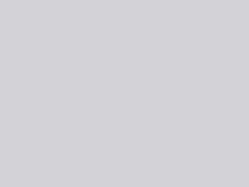
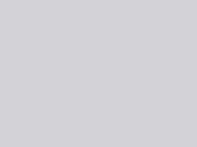
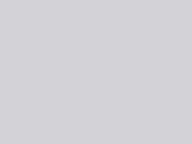

Q3T Prisms: A Linear-Quadratic Solid Shell Element for Elastoplastic Surfaces
Proc. ACM SIGGRAPH 2024


My research lies at the intersection of computer graphics, computational mechanics, and digital manufacturing, where I develop computational methods for modeling and design of complex physical systems. I am particularly interested in applications to mechanical metamaterials, robotics, and digital humans, leveraging physics-based simulation, optimization-driven design, and neural representations to bridge the gap between virtual models and real-world performance.
I obtained my PhD from the University of Tübingen in 2010, followed by a postdoctoral stay at the Computer Graphics Laboratory at ETH Zurich. I joined Disney Research Zurich in 2011, where I spent six years as a researcher and group leader. In 2017, I moved to the University of Montreal, where I was a tenured professor in the Computer Science department until 2020. I am currently a Senior Research Scientist at the Computational Robotics Laboratory (CRL).
I received the Outstanding Young Researcher Award from the Canadian Computer Science Association in 2018 and was named NSERC Canada Research Chair in 2019.

Q3T Prisms: A Linear-Quadratic Solid Shell Element for Elastoplastic Surfaces
Proc. ACM SIGGRAPH 2024

ContourCraft: Learning to Resolve Intersections in Neural Multi-Garment Simulations
Proc. ACM SIGGRAPH 2024




Differentiable Geodesic Distance for Intrinsic Minimization on Triangle Meshes
ACM Transactions on Graphics (Proc. ACM SIGGRAPH 2024)
